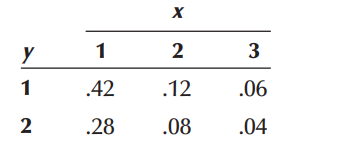
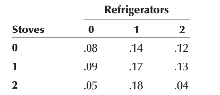

7 Further topics on random variables
7.1 Joint distribution of two discrete r.vs
The function \(f(x, y)\) is a joint probability distribution or probability mass function of the discrete random variables \(X\) and \(Y\) if
- \(f(x,y)\ge 0\) for all \((x,y)\),
- \(\sum_x \sum_y f(x,y)=1\),
- \(P(X=x, Y=y)=f(x,y)\)
7.1.1 Marginal distribution \(X\) and \(Y\) (discrete)
The marginal distributions of \(X\) alone and of \(Y\) alone are
- \(f_X(x)=\sum_y f(x,y)\)
- \(f_Y(y)=\sum_x f(x,y)\)
7.2 Joint distribution of two continuous r.vs
The function \(f(x, y)\) is a joint density function of the continuous random variables \(X\) and \(Y\) if
- \(f(x,y)\ge 0\),
- \(\int_{-\infty}^\infty \int_{-\infty}^\infty f(x,y)\ \ dx\ \ dy=1\).
7.2.1 Marginal distribution \(X\) and \(Y\) (continuous )
The marginal distributions of \(X\) alone and of \(Y\) alone are
- \(f_X(x)= \int_{-\infty}^\infty f(x,y) \ \ dy\),
- \(f_Y(y)= \int_{-\infty}^\infty f(x,y) \ \ dx\)
7.3 Covariance and correlation between \(X\) and \(Y\)
\[ Cov(X,Y)=\sigma_{XY}=E \left[ (X-\mu_X)(Y-\mu_Y)\right] \]
In other way,
\[ Cov(X,Y)=\sigma_{XY}=E(XY)-\mu_X\mu_Y \]
\[ \rho=\frac{\sigma_{XY}}{\sigma_X \sigma_Y}\ \ ; -1\le\rho\le+1 \]
7.4 Laws of Expected Value and Variance of the Linear combination of Two Variables
Suppose a new random variable is \(Z\) as follows:
\[ Z=aX+bY \]
Where \(a\) and \(b\) are both constants.
- \(E(Z)=E(aX+bY)=aE(X)+bE(Y)\),
- \(Var(Z)=Var(aX+bY)=a^2 Var(X)+b^2 Var(Y)+2ab \ \ Cov (X,Y)\)
N.B: If \(X\) and \(Y\) are independent, \(Cov(X,Y ) = 0\).
7.5 Some problem on discrete joint distribution
Problem 7.5.1 The joint probability distribution of X and Y is shown in the following table.

a. Determine the marginal distributions of \(X\) and \(Y\) .
b. Compute the covariance and coefficient of correlation between \(X\) and \(Y\) .
c. Develop the probability distribution of \(X + Y\) .
d. Find \(P(X+Y\le3)\).
Problem 7.5.2 After analyzing several months of sales data, the owner of an appliance store produced the following joint probability distribution of the number of refrigerators and stoves sold daily.

a. Find the marginal probability distribution of the number of refrigerators sold daily.
b. Find the marginal probability distribution of the number of stoves sold daily.
c. Compute the mean and variance of the number of refrigerators sold daily.
d. Compute the mean and variance of the number of stoves sold daily.
e. Compute the covariance and the coefficient of correlation.
7.6 Some problem on continuous joint distribution
Let \(X\) denote the reaction time, in seconds, to a certain stimulus and \(Y\) denote the temperature (◦F) at which a certain reaction starts to take place. Suppose that two random variables \(X\) and Y have the joint density.
\[ f(x, y) = \begin{cases} 4xy, & 0 < x < 1, \, 0 < y < 1, \\ 0, & \text{elsewhere}. \end{cases} \]
Find
a. \(P(0\le X \le \frac{1}{2} \ \ {and}\ \ \frac{1}{4} \le Y\le \frac{1}{2})\);
b. \(P(X<Y)\).
7.7 Sum and Average of Independent Random Variables
Sum of Independent Random Variables:
\(Y = a_1X_1+a_2X_2+...+a_nX_n\), for \(a_1, a_2,..., a_n \in \mathbb{R}\)
\(E(Y) = a_1E(X_1)+a_2E(X_2)+...+a_nE(X_n)\)
\(Var(Y) = a_1^2Var(X_1) + a_2^2Var(X_2) + ... + a_n^2Var(X_n)\)
If \(n\) random variables \(X_i\) have common mean \(\mu\) and common variance \(\sigma^2\) then,
\(E(Y) = (a_1 + a_2 + ... + a_n)\mu\)
\(Var(Y) = (a_1^2 + a_2^2 + ... + a_n^2)\sigma^2\)
Average of Independent Random Variables:
\(X_1,X_2,...,X_n\) are \(n\) independent random variables
\(\overline{X} = \frac{X_1+X_2+...+X_n}{n}\)
\(E[\overline{X}] = \frac{1}{n}[E(X_1)+E(X_2)+...+E(X_n)]\)
\(Var[\overline{X}] = \frac{1}{n^2}[Var(X_1)+Var(X_2)+...+Var(X_n)]\)
If \(n\) random variables \(X_i\) have common mean \(\mu\) and common variance \(\sigma^2\) then,
\(E[\overline{X}] = \mu\)
\(Var[\overline{X}] = \frac{\sigma^2}{n}\)
7.8 Some approximations
7.8.1 Normal Approximation to the Binomial Distribution
Let \(X \sim Bin(n,p)\). When \(n\) is large so that both \(np \geq 5\) and \(n(1-p) \geq 5\). We can use the normal distribution to get an approximate answer. Remember to use continuity correction.
\(X \sim N(\mu=np, \sigma^2=np(1-p))\), approx.
Problem 7.8.1 A car-rental company has determined that the probability a car will need service work in any given month is 0.2. The company has 900 cars (Newbold, Carlson, and Thorne 2013).
(a) What is the probability that more than 200 cars will require service work in a particular month?
(b) What is the probability that fewer than 175 cars will need service work in a given month?
Problem 7.8.2 The tread life of Stone Soup tires can be modeled by a normal distribution with a mean of 35,000 miles and a standard deviation of 4,000 miles. A sample of 100 of these tires is taken. What is the probability that more than 25 of them have tread lives of more than 38,000 miles? (Newbold, Carlson, and Thorne 2013)
7.8.2 Normal Approximation to the Poisson Distribution
Let \(X \sim Poisson(\mu)\). When \(\mu\) is large (\(\mu > 5\)) then the Normal distribution can be used to approximate the Poisson distribution.
\(X\sim N(\mu,\mu)\) approx.
Problem 7.8.3 Hits to a high-volume Web site are assumed to follow a Poisson distribution with a mean of 10,000 per day. Approximate each of the following: (Montgomery and Runger 2014)
(a) Probability of more than 20,000 hits in a day,
(b) Probability of less than 9900 hits in a day .